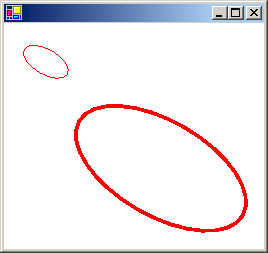
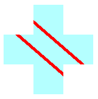

Управление состоянием объекта Graphics
Graphics Класс является сердцем GDI+. Чтобы нарисовать что-либо, необходимо получить Graphics , задать его свойства и вызывать его методы DrawLine, DrawImage, DrawStringи ей подобные).
В следующем примере вызывается DrawRectangle метод Graphics объекта. Первый аргумент, переданный DrawRectangle метод Pen объекта.
Dim graphics As Graphics = e.Graphics
Dim pen As New Pen(Color.Blue) ' Opaque blue
graphics.DrawRectangle(pen, 10, 10, 200, 100)
Graphics graphics = e.Graphics;
Pen pen = new Pen(Color.Blue); // Opaque blue
graphics.DrawRectangle(pen, 10, 10, 200, 100);
Состояние графики
Объект Graphics объекта более чем функции рисования, такие как DrawLine и DrawRectangle. Объект Graphics объект также хранит состояние графики, которое можно разделить на следующие категории:
Параметры качества
Преобразования
Отсеченная область
Параметры качества
Объект Graphics имеет несколько свойств, которые влияют на качество рисуемых объектов. Например, можно задать TextRenderingHint свойство, чтобы указать тип сглаживания (если таковые имеются), примененный к тексту. Другие свойства, которые влияют на качество являются SmoothingMode, CompositingMode, CompositingQuality, и InterpolationMode.
В следующем примере рисуется два эллипса, один с режимом сглаживания AntiAlias и один с режимом сглаживания HighSpeed:
Dim graphics As Graphics = e.Graphics
Dim pen As New Pen(Color.Blue)
graphics.SmoothingMode = SmoothingMode.AntiAlias
graphics.DrawEllipse(pen, 0, 0, 200, 100)
graphics.SmoothingMode = SmoothingMode.HighSpeed
graphics.DrawEllipse(pen, 0, 150, 200, 100)
Graphics graphics = e.Graphics;
Pen pen = new Pen(Color.Blue);
graphics.SmoothingMode = SmoothingMode.AntiAlias;
graphics.DrawEllipse(pen, 0, 0, 200, 100);
graphics.SmoothingMode = SmoothingMode.HighSpeed;
graphics.DrawEllipse(pen, 0, 150, 200, 100);
Преобразования
Объект Graphics поддерживает два преобразования (мировое и страничное), которые применяются ко всем элементам, отображаемым Graphics объекта. Любой аффинного преобразования могут храниться в мировое преобразование. Аффинные преобразования включают масштабирование, поворот, отражение, наклон и преобразования. Преобразование страницы может использоваться для масштабирования и преобразования единиц измерения (например, точек в дюймах). Дополнительные сведения см. в разделе системы координат и преобразования.
В следующем примере задается мировое и страничное преобразования из Graphics объекта. Мировое преобразование присваивается поворот на 30 градусов. Преобразование страницы устанавливается таким образом, координаты передать второй DrawEllipse будет рассматриваться как миллиметрах вместо пикселей. Код вызывает два идентичных DrawEllipse метод. Мировое преобразование применяется к первому DrawEllipse вызов и оба вида преобразований (мировое и страничное) применяются к второй DrawEllipse вызова.
Dim graphics As Graphics = e.Graphics
Dim pen As New Pen(Color.Red)
graphics.ResetTransform()
graphics.RotateTransform(30) ' world transformation
graphics.DrawEllipse(pen, 0, 0, 100, 50)
graphics.PageUnit = GraphicsUnit.Millimeter ' page transformation
graphics.DrawEllipse(pen, 0, 0, 100, 50)
Graphics graphics = e.Graphics;
Pen pen = new Pen(Color.Red);
graphics.ResetTransform();
graphics.RotateTransform(30); // world transformation
graphics.DrawEllipse(pen, 0, 0, 100, 50);
graphics.PageUnit = GraphicsUnit.Millimeter; // page transformation
graphics.DrawEllipse(pen, 0, 0, 100, 50);
На следующем рисунке двух эллипсов. Обратите внимание, что поворот на 30 градусов относительно начала координат (в левом верхнем углу клиентской области), не о центров эллипсов. Обратите внимание на то, что толщина пера, равная 1, означает 1 пиксель для первого эллипса и 1 миллиметр второго эллипса.

Отсеченная область
Объект Graphics объект поддерживает область обрезки, применяются ко всем элементам, отображаемым Graphics объекта. Можно задать области обрезки, вызвав SetClip метод.
В следующем примере создается область креста, являющаяся объединением двух прямоугольников. Этот регион используется в качестве отсеченной области объекта Graphics объекта. Затем код выводит две строки, которые ограничены внутренней области отсечения.
Dim graphics As Graphics = e.Graphics
' Opaque red, width 5
Dim pen As New Pen(Color.Red, 5)
' Opaque aqua
Dim brush As New SolidBrush(Color.FromArgb(255, 180, 255, 255))
' Create a plus-shaped region by forming the union of two rectangles.
Dim [region] As New [Region](New Rectangle(50, 0, 50, 150))
[region].Union(New Rectangle(0, 50, 150, 50))
graphics.FillRegion(brush, [region])
' Set the clipping region.
graphics.SetClip([region], CombineMode.Replace)
' Draw two clipped lines.
graphics.DrawLine(pen, 0, 30, 150, 160)
graphics.DrawLine(pen, 40, 20, 190, 150)
Graphics graphics = e.Graphics;
// Opaque red, width 5
Pen pen = new Pen(Color.Red, 5);
// Opaque aqua
SolidBrush brush = new SolidBrush(Color.FromArgb(255, 180, 255, 255));
// Create a plus-shaped region by forming the union of two rectangles.
Region region = new Region(new Rectangle(50, 0, 50, 150));
region.Union(new Rectangle(0, 50, 150, 50));
graphics.FillRegion(brush, region);
// Set the clipping region.
graphics.SetClip(region, CombineMode.Replace);
// Draw two clipped lines.
graphics.DrawLine(pen, 0, 30, 150, 160);
graphics.DrawLine(pen, 40, 20, 190, 150);
На следующем рисунке показан усеченные строки:
